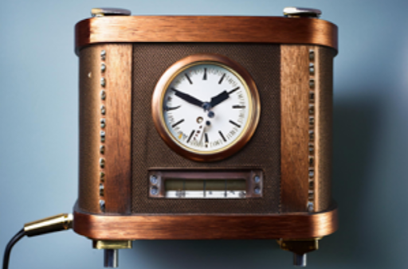
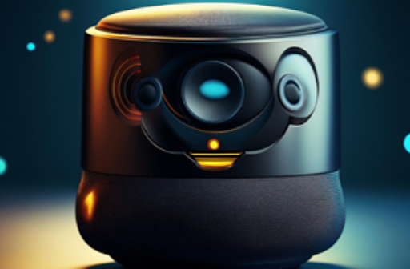

Aluminum Wedge + Dishwasher
A cleaning tool that combines an aluminum wedge with a dishwasher to enhance the efficiency of cleaning kitchen items, making the process more convenient and thorough.

A cleaning tool that combines an aluminum wedge with a dishwasher to enhance the efficiency of cleaning kitchen items, making the process more convenient and thorough.
Small, autonomous robots designed for dirt collection and dusting, simplifying the cleaning process by handling routine maintenance tasks.

A waste management device that burns non-recyclable materials to reduce their volume, integrated with automated systems to streamline waste disposal and handling.
Robotic units that transport larger waste items to an incinerator, facilitating easier and more efficient waste management.

A timekeeping device that announces the current time, providing hands-free convenience and accessibility.
An intelligent assistant that manages schedules, sets reminders, and provides verbal updates, integrating with other automated systems for seamless daily management.
An automated cooking appliance that prepares breakfast foods with minimal user input, programmed to start cooking at a specific time and adjust settings for different meals.

A device that provides real-time weather updates and forecasts, with automated adjustments to indoor climate controls based on external conditions.

Electrically operated doors that open and close with remote control or automated scheduling, enhancing convenience and security for vehicle access.
Smart patio tables that integrate features like card games, drink dispensers, food warmers, and music systems, creating a fully automated outdoor experience.
Devices that preheat the bed to a comfortable temperature before sleep, ensuring a cozy and pleasant rest.

Automated bathing systems that adjust water temperature, pressure, and duration based on user preferences or preset routines.
Programmable irrigation systems that automatically water gardens according to a schedule or weather conditions, optimizing water usage and plant health.